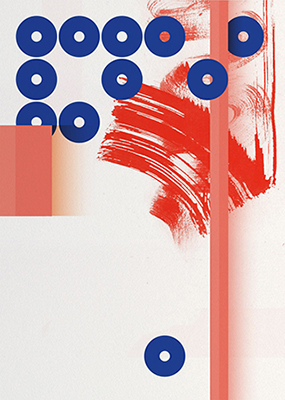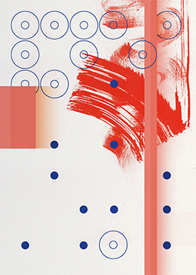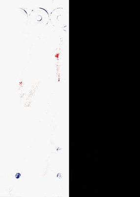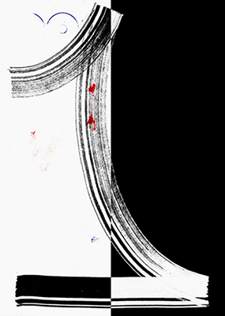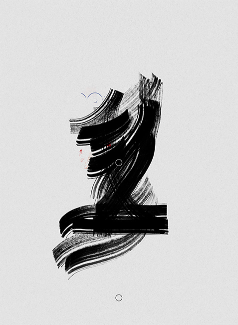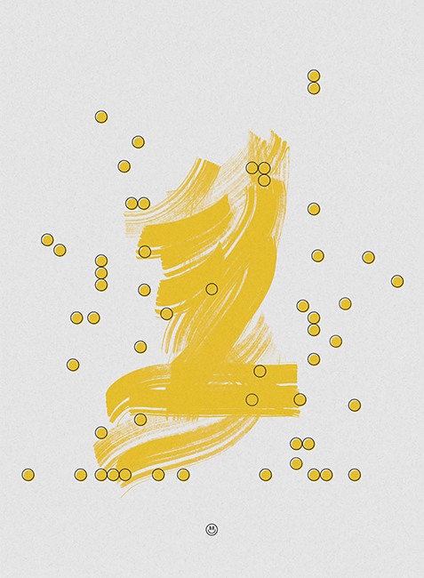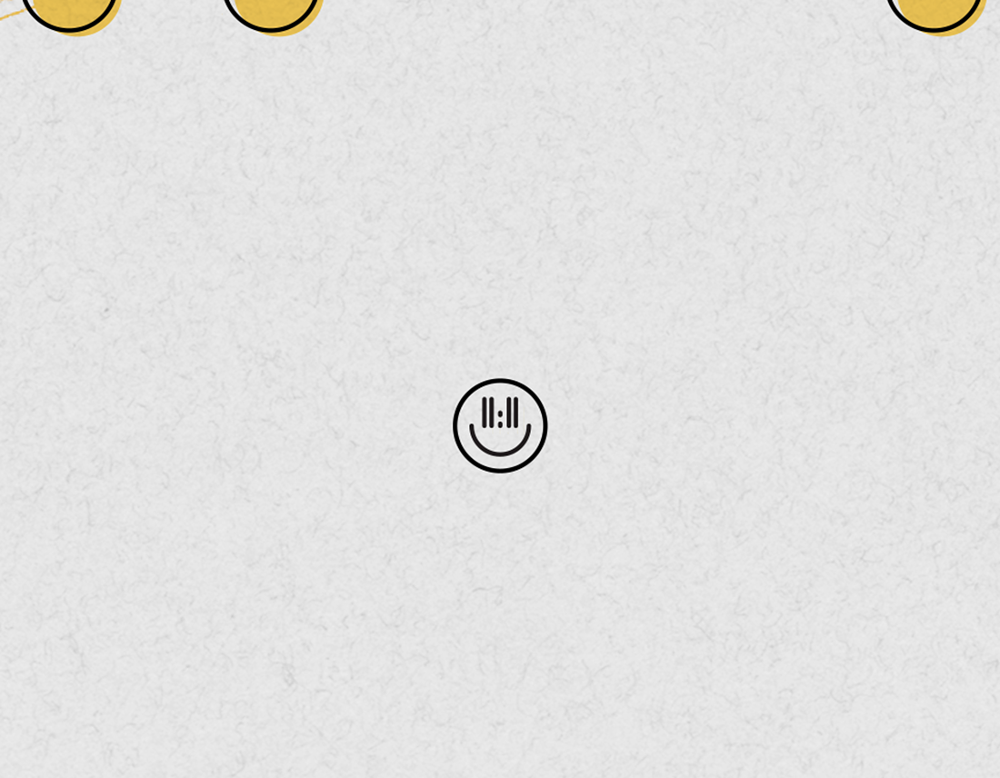
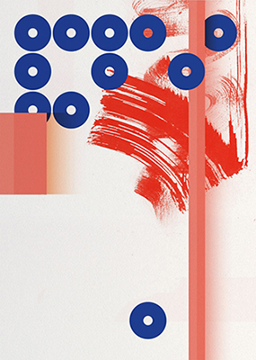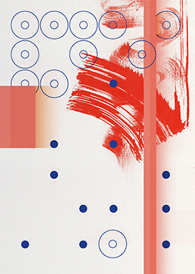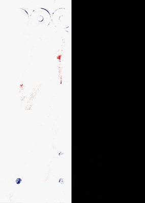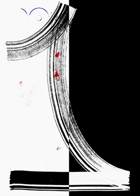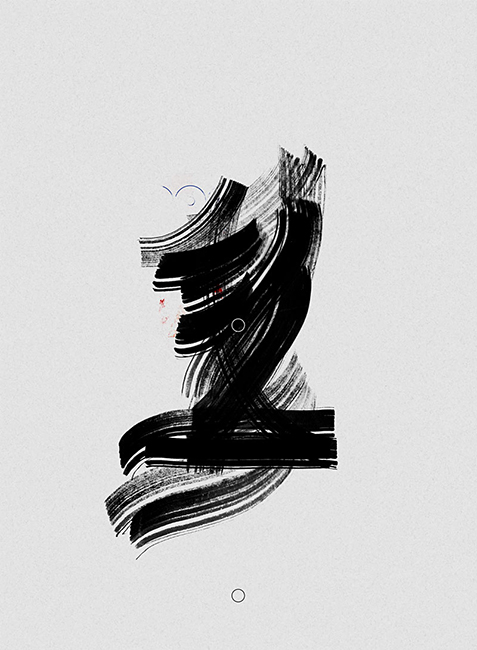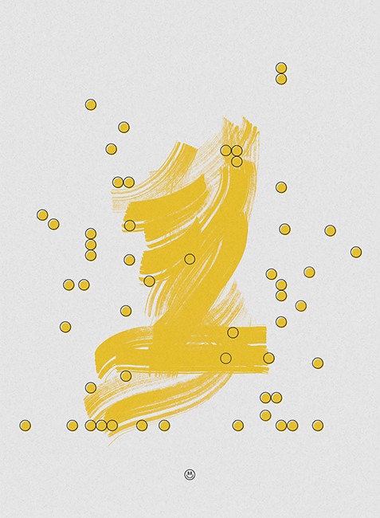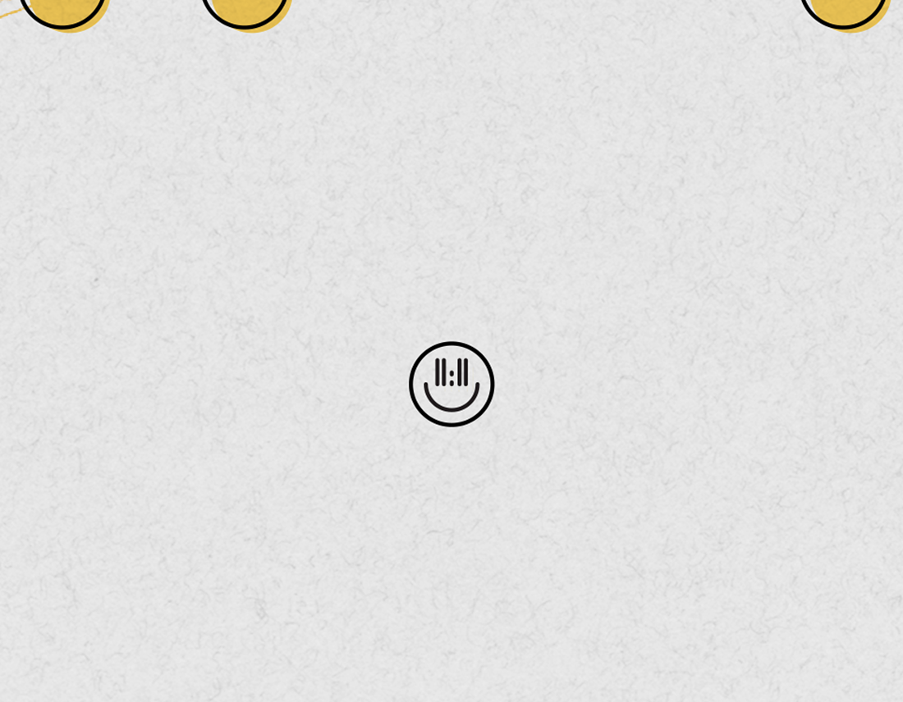
11:11 was conceptualized by Elie Andersen. The other artists were Alice Taranto, Lukas Eigler-Harding, Elizabeth Goodspeed, Amrit Mazumder, Mina Park, Will Urmston, Ben Adman, Drea Sullivan, and Oscar Robert.
11:11, Graphic Design Gallery at RISD, 2014
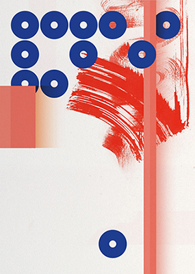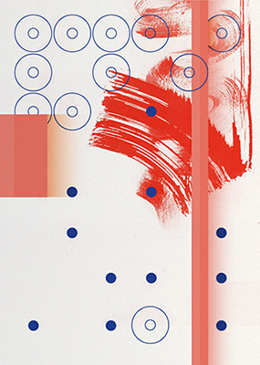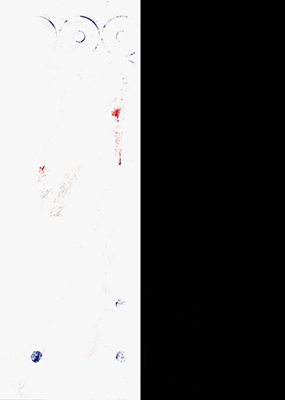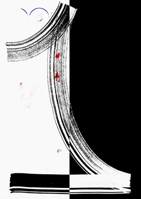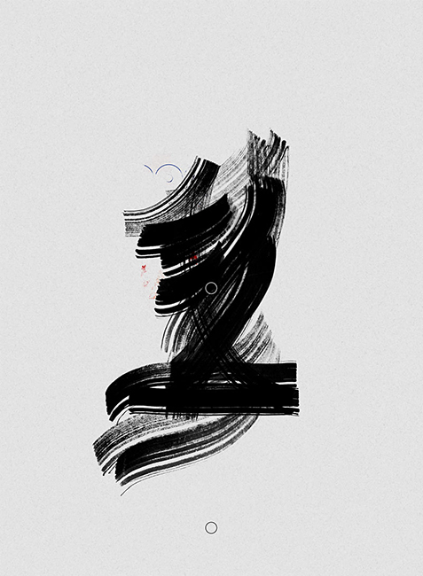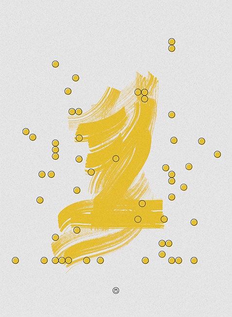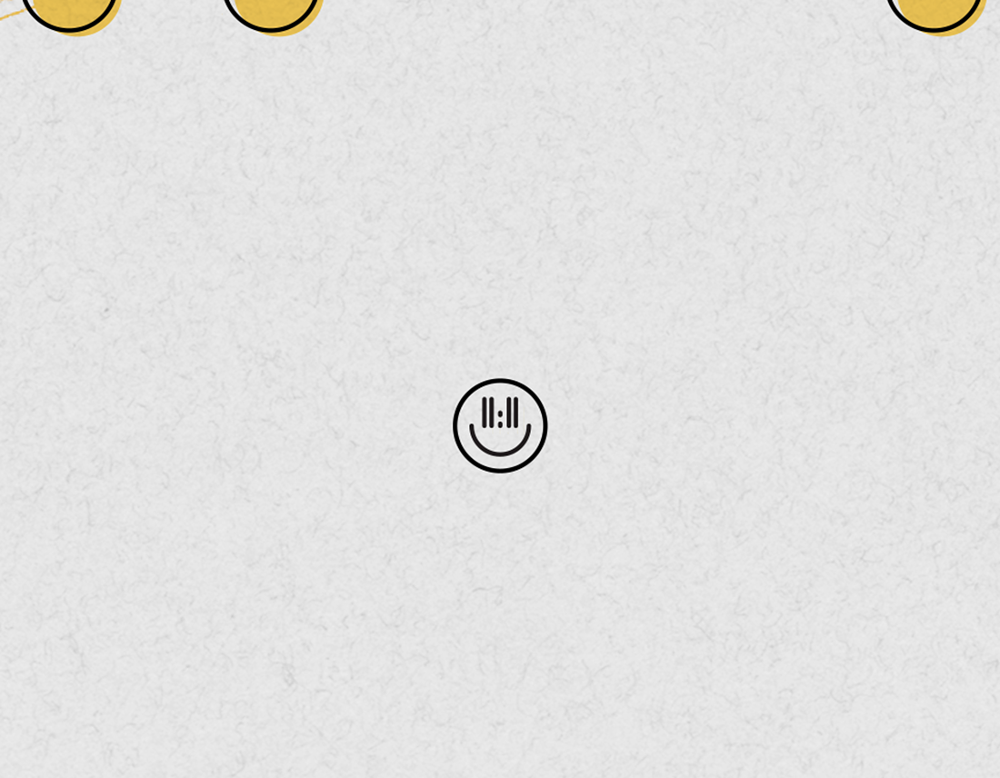